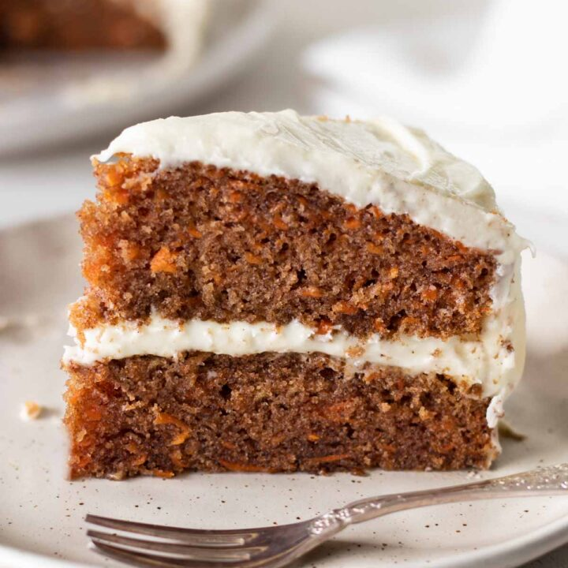

Carrot Cake
Home Page

Description:
Delight friends with an afternoon tea that includes this easy carrot cake.
You can bake the cake, freeze it and just drizzle over the icing on the day.
Ingredients:
- 175g light muscovado sugar
- 175ml sunflower oil
- 3 large eggs
- 140g grated carrot
- 100g raisins
- 1 large orange
- 175g self-raising flour
- 1 tsp bicarbonate of soda
- 1 tsp ground cinnamon
- ½ tsp grated nutmeg
- 175g icing sugar
- 1½-2 tbsp orange juice
Steps:
- Heat the oven to 180C/160C fan/gas 4.
Oil and line the base and sides of an 18cm square cake tin with baking parchment.
- Tip the sugar, sunflower oil and eggs into a big mixing bowl.
Lightly mix with a wooden spoon. Stir in the carrots, raisins and orange zest.
- Sift the flour, bicarbonate of soda, cinnamon and nutmeg into the bowl.
Mix everything together, the mixture will be soft and almost runny.
- Pour the mixture into the prepared tin and bake for 40-45 mins
or until it feels firm and springy when you press it in the centre.
- Cool in the tin for 5 mins, then turn it out, peel off the paper and cool on a wire rack.
- Beat the icing sugar and orange juice in a small bowl until smooth,
you want the icing about as runny as single cream.
- Put the cake on a serving plate and boldly drizzle the icing back and forth
in diagonal lines over the top, letting it drip down the sides.